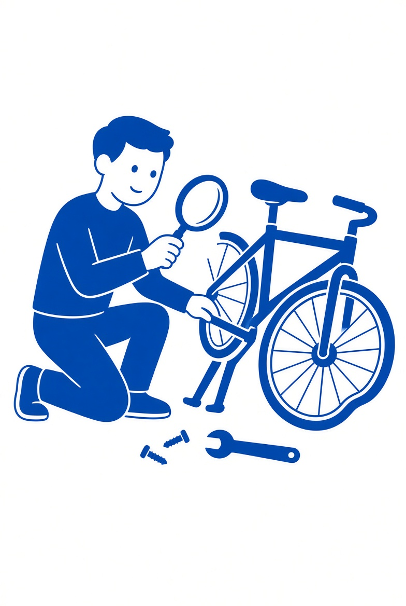
onderzoeken
to investigate
onregelmatigrang 926Thought & knowledgegetekend
onderzochtheeft onderzocht
- Scene
- one adult stands at a plain table bent forward with one eye to the eyepiece of a bold simple microscope that stands on the table, one hand on the microscope's focus knob; a small open notebook and a pencil lie on the table beside it. No magnifying glass, no bicycle, no second person.
- Must read
- a person with an eye to a microscope on a table, a notebook beside it.
- Avoid
- a hand-held magnifying glass (zoeken); a person kneeling on the floor (zoeken); a person leaning at a hanging picture (bekijken); a hammer and planks (maken); a pointer on a wall chart (wijzen).
- Alt text
- Iemand buigt zich aan een tafel over een microscoop, met een schrift ernaast.
- Example
- De politie gaat de zaak onderzoeken.
The police are going to investigate the case.
onderzoeken.png · rang 926 · B2 onregelmatig · lexicon woorden.tsv
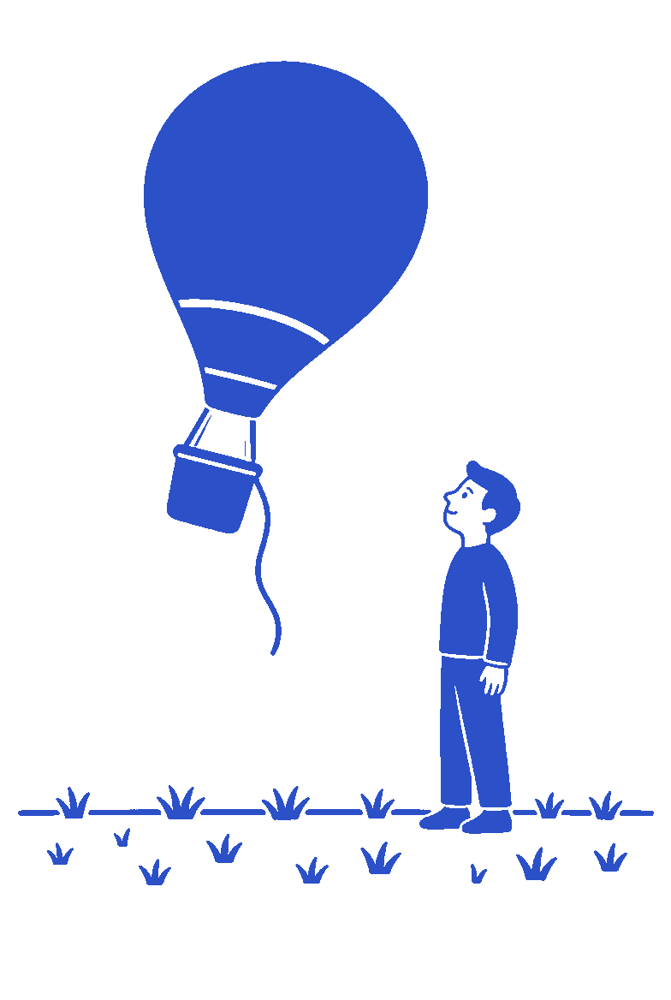
stijgen
to rise
onregelmatigrang 2531Movement & positiongetekend
steegis gestegen
- Scene
- a hot-air balloon has just left the ground over a flat field: the basket hangs a metre above the grass and the rope from it trails slack; one adult stands on the field with the head tipped back, watching it go up.
- Must read
- a balloon basket clear of the grass with a watcher looking up.
- Avoid
- an aeroplane above the clouds (vliegen); a person on a staircase (stappen); a balloon basket resting on the grass (landen); a kite on a string (vliegeren); a person on a ladder (klimmen).
- Alt text
- Een luchtballon hangt net boven een weiland; iemand op het gras kijkt er met het hoofd achterover naar.
- Example
- De prijzen stijgen elk jaar.
Prices rise every year.
stijgen.png · rang 2531 · B2 onregelmatig · lexicon woorden.tsv
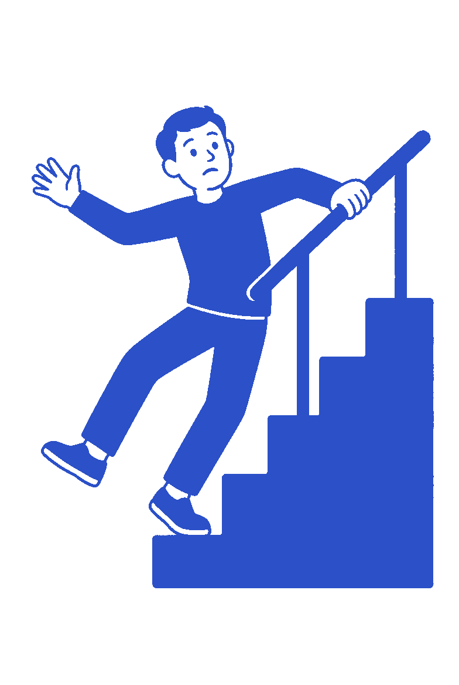
grijpen
to seize
onregelmatigrang 2750Abstract & generalgetekend
greepheeft gegrepen
- Scene
- one adult slips on a stair and seizes the handrail with one hand, the fingers clamped round it, the body tilted back and one foot sliding off the step; the other arm is flung out.
- Must read
- a hand clamped hard round a handrail as the feet slip.
- Avoid
- a hand closing around a mug resting on a shelf (pakken); a ball caught in two cupped hands (vangen); a person lying at the foot of the stairs (vallen); a hand resting loosely on the rail as a person walks up (stappen).
- Alt text
- Iemand glijdt uit op een trap en klemt een hand om de leuning.
- Example
- De agent kan de dief nog net grijpen.
The officer can just manage to seize the thief.
grijpen.png · rang 2750 · B2 onregelmatig · lexicon woorden.tsv

verbieden
to prohibit
onregelmatigrang 2983Abstract & generalgetekend
verboodheeft verboden
- Scene
- One adult stands at a barrier in front of a doorway with one open palm raised flat and held forward towards a child who steps in with one foot already over the threshold; the child has stopped, the head down, the chin on the chest.
- Must read
- a raised flat palm halting a child at a doorway.
- Avoid
- a hand laid flat on the barrier with a round sign mounted above it (mogen); an arm barred across the doorway with an adult held inside it (dwingen); an open empty palm held out low (vragen); a large red cross drawn on the frame.
- Alt text
- Een volwassene houdt een vlakke hand op naar een kind dat bij de deur is blijven staan.
- Example
- De school wil telefoons in de les verbieden.
The school wants to ban phones in lessons.
verbieden.png · rang 2983 · B2 onregelmatig · lexicon woorden.tsv
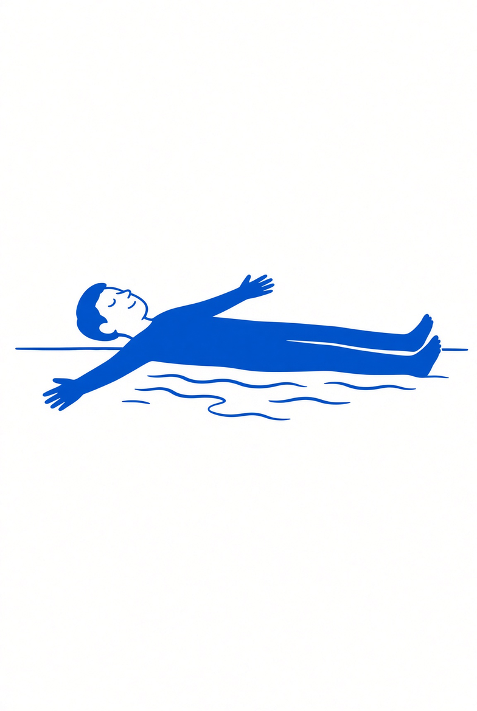
drijven
to float
onregelmatigrang 3191Abstract & generalgetekend
dreefheeft/is gedreven
- Scene
- one adult lies on their back on calm water, arms spread wide and legs straight, face up and eyes closed, the body level and still with no splash. The body lies horizontal along the water surface, seen from the side, with the head at one end and the feet at the other, the whole back flat on the water line and the legs level, not vertical.
- Must read
- a person lying still and level on the water's surface.
- Avoid
- a swimmer with one arm lifted in a stroke (zwemmen); a boat going under bow first (zinken); a person lying on a beach towel (liggen); a diver head first (duiken).
- Alt text
- Iemand rust met gespreide armen op de rug op het water.
- Example
- Het houten bootje drijft op het water.
The wooden boat floats on the water.
drijven.png · rang 3191 · B2 onregelmatig · lexicon woorden.tsv
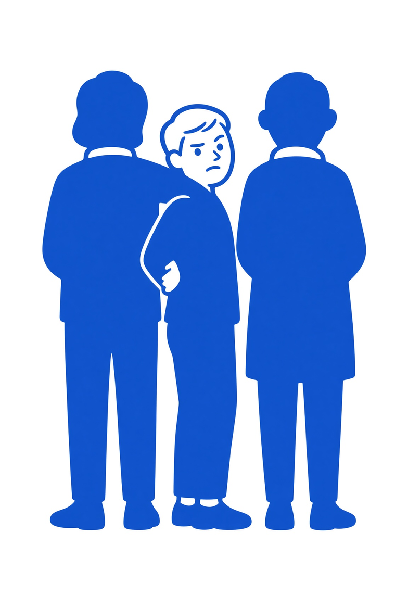
dringen
to push in (a queue)
onregelmatigrang 3463Movement & positiongetekend
drongheeft gedrongen
- Scene
- one adult pushes one shoulder between the backs of two adults waiting in a line, the shoulder already wedged in the gap; the front person turns with a frown. Three figures only, no counter and no shop.
- Must read
- a shoulder wedged between two waiting backs.
- Avoid
- two hands flat on a big crate on the floor (duwen); a note pushed along a counter (betalen); a hand sliding a drawer open from the side (schuiven); a thin queue standing quietly in a line (wachten).
- Alt text
- Iemand wurmt een schouder tussen twee wachtenden in een rij voor een toonbank.
- Example
- Sommige mensen dringen voor in de rij.
Some people push in at the front of the queue.
dringen.png · rang 3463 · B2 onregelmatig · lexicon woorden.tsv

schuiven
to slide (something), to push
onregelmatigrang 3691Movement & positiongetekend
schoofheeft geschoven
- Scene
- front view of a small waist-high cupboard with three drawers drawn as flat panels; the middle drawer stands half open, and one hand with a flat palm pushes against the drawer face to close it; nothing else.
- Must read
- a hand pushing a half-open drawer shut.
- Avoid
- two hands shoved flat against a big crate on the floor (duwen); one shoulder pressed into a queue of backs (dringen); both arms drawing a rope with the body leaning back (trekken); an open hand closing round a mug on a shelf (pakken).
- Alt text
- Een hand duwt een half open lade dicht.
- Example
- Kun je de kast een stukje naar links schuiven?
Can you push the cupboard a bit to the left?
schuiven.png · rang 3691 · B2 onregelmatig · lexicon woorden.tsv
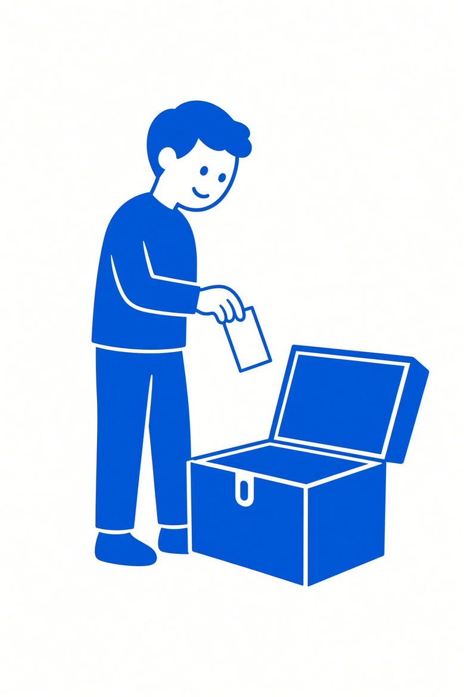
schenken
to donate
onregelmatigrang 3894Money & tradegetekend
schonkheeft geschonken
- Scene
- One adult stands at an open wooden collection chest and lets a folded banknote fall from the fingers into it; the note stands upright in the air a hand above the rim, the fingers just open and the eyes on the chest. Nobody holds out an open hand to receive it. The banknote is a plain blank rectangle with a plain border, with no symbol, circle, letter or ornament on it.
- Must read
- a banknote falling from open fingers into an open collection chest.
- Avoid
- a note slid flat across a shop counter (betalen); a note held out on an open palm to a shopkeeper (bieden); a note pressed into another person's hand (geven); a closed box with a slot and a padlock on the lid (stelen).
- Alt text
- Een volwassene laat een briefje geld uit de vingers vallen in een open kist.
- Example
- Zij schenkt haar oude boeken aan de bibliotheek.
She donates her old books to the library.
schenken.png · rang 3894 · B2 onregelmatig · lexicon woorden.tsv
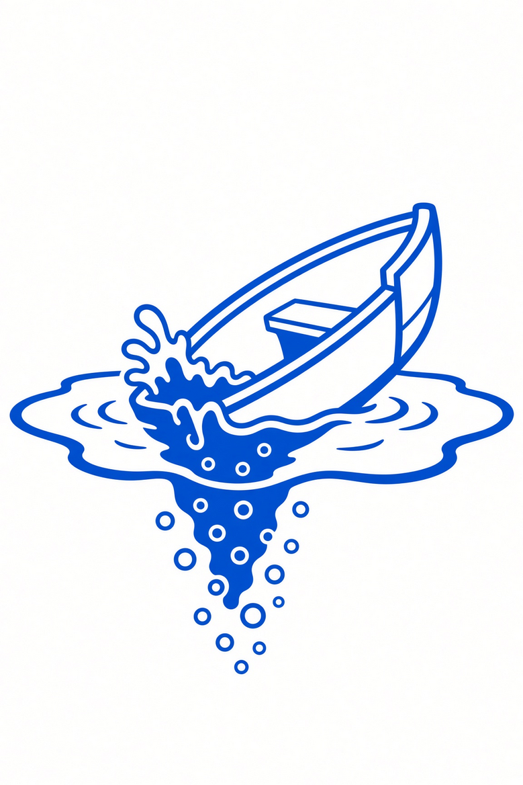
zinken
to sink
onregelmatigrang 4023Movement & positiongetekend
zonkis gezonken
- Scene
- a small rowing boat lies low in a pond, its bow already under the surface and water pouring in over the side, the stern tipped up; a ring of bubbles rises where the bow went under. Nobody is in the boat.
- Must read
- a small boat going under, bow first.
- Avoid
- a crate resting on the surface beside a person (drijven); a swimmer with one arm lifted (zwemmen); a diver head first (duiken); a boat pulled up dry on the bank.
- Alt text
- Een roeibootje loopt vol water en gaat met de punt omlaag onder; er komen belletjes boven.
- Example
- Het schip zinkt langzaam in de zee.
The ship slowly sinks into the sea.
zinken.png · rang 4023 · B2 onregelmatig · lexicon woorden.tsv
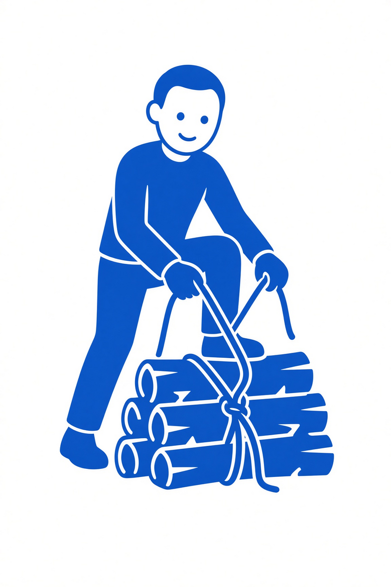
binden
to bind
onregelmatigrang 4031Abstract & generalgetekend
bondheeft gebonden
- Scene
- One adult stands over a thick pile of firewood with both hands drawing the ends of a rope into a tight knot, the loop already closed around the wood and the last pull not yet made; one knee rests on the stack and one end of the rope hangs free.
- Must read
- a rope drawn into a knot round a bundle of firewood.
- Avoid
- a crate pushed flat against a cupboard front (schuiven); a hand closing round a mug on a shelf (pakken); two people holding one taut rope at waist height (leiden); a torn sheet held apart in both hands (scheiden).
- Alt text
- Een volwassene trekt touw om een stapel hout strak samen tot een knoop.
- Example
- Ik moet mijn veters nog binden.
I still have to tie my shoelaces.
binden.png · rang 4031 · B2 onregelmatig · lexicon woorden.tsv

zuigen
to suck
onregelmatigrang 4134Abstract & generalgetekend
zoogheeft gezogen
- Scene
- one adult sits at a small table and draws on a bent straw standing in a glass of lemonade, the cheeks hollow, the lips closed round the straw and the level of the drink a little below the rim; both hands rest on the table. The cheek is drawn as a clear concave curve, sunk inward beside the straw.
- Must read
- hollow cheeks and lips closed round a straw.
- Avoid
- a tilted glass at the lips half full (drinken); a hand bending a straw between the fingers; a straight straw standing in a full glass with both hands off it (hebben); open lips over a candle flame (blazen).
- Alt text
- Een volwassene trekt met holle wangen aan een rietje in een glas limonade.
- Example
- De baby zuigt aan de fles.
The baby sucks on the bottle.
zuigen.png · rang 4134 · B2 onregelmatig · lexicon woorden.tsv
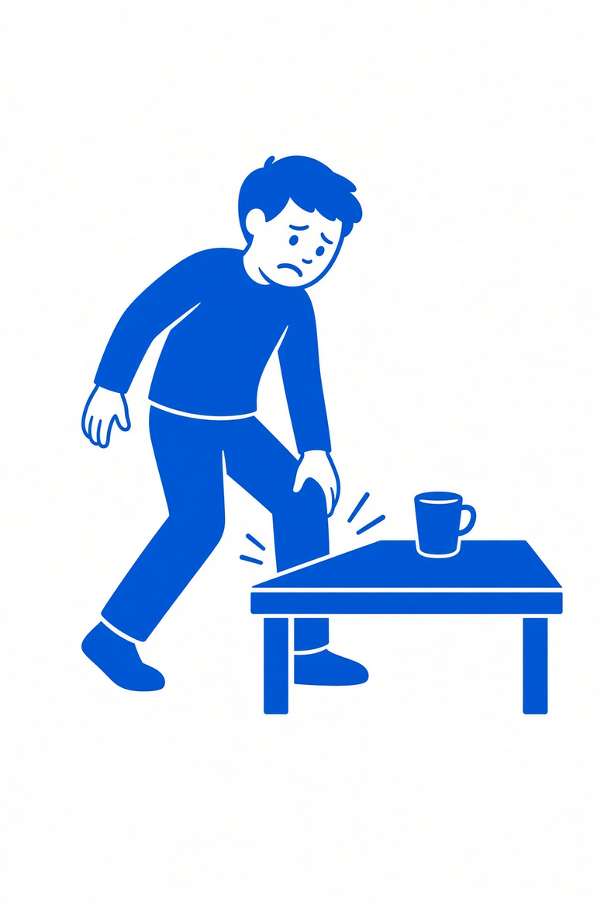
stoten
to bump, to knock
onregelmatigrang 4418Abstract & generalgetekend
stootteheeft gestoten
- Scene
- one adult walking through a room bumps one knee against the corner of a low table, the face screwed up and one hand already going down to the knee; the table has jolted a little and a cup on it wobbles.
- Must read
- a knee hitting the corner of a low table with a pained face.
- Avoid
- a foot kicking a ball (schoppen); a person falling to the floor (vallen); a hand hitting a nail (slaan); a person lying hurt on the ground.
- Alt text
- Iemand loopt met de knie tegen de hoek van een lage tafel en trekt een pijnlijk gezicht.
- Example
- Ik stoot mijn hoofd tegen de deur.
I bump my head against the door.
stoten.png · rang 4418 · B2 onregelmatig · lexicon woorden.tsv

spuiten
to squirt, to spray
onregelmatigrang 4575Abstract & generalgetekend
spootheeft gespoten
- Scene
- One adult stands in a garden holding a water pistol at arm's length with one finger on the trigger, a thin sharp jet of water already leaving the tip towards a small plant on the ground; the jet is caught halfway and the plant leans away from it, and the other hand hangs free. The arm points diagonally downward and the jet is a short arc ending at a leaf-bent plant a short distance ahead on the ground; the plant is on the same side as the jet and leans away from it.
- Must read
- a thin jet of water caught halfway between a pistol nozzle and a plant.
- Avoid
- a thumb on the end of a garden hose with water fanning out; a stone skipped over a pond (werpen); an open hand holding a dripping sponge over a bucket; a bottle poured out into a full glass (drinken).
- Alt text
- Een volwassene houdt een waterpistool op een plantje gericht; een dunne straal is onderweg.
- Example
- De tuinman spuit water op de planten.
The gardener sprays water on the plants.
spuiten.png · rang 4575 · B2 onregelmatig · lexicon woorden.tsv
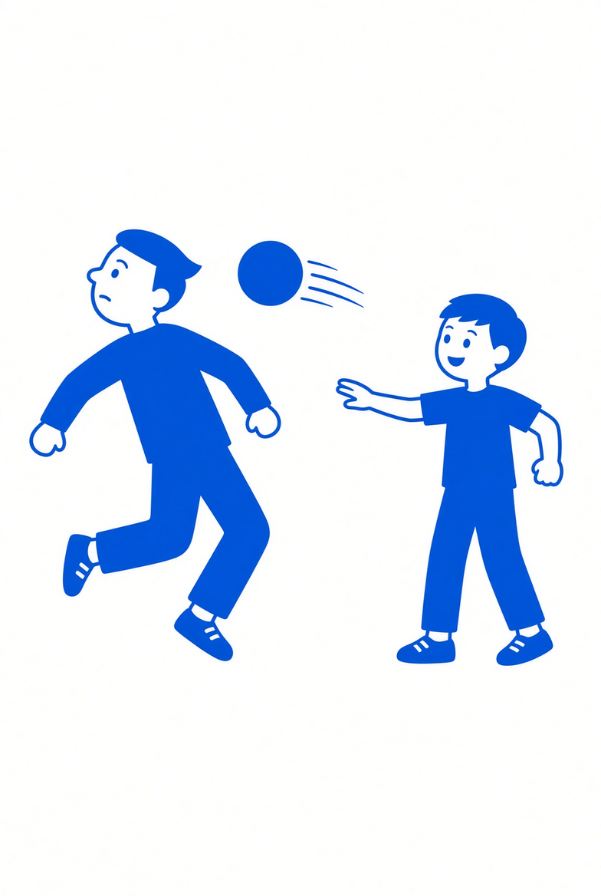
ontwijken
to dodge
onregelmatigrang 5080Movement & positiongetekend
ontweekheeft ontweken
- Scene
- one adult on a playground leans sharply to one side, knees bent, as a ball flies past where the head was; one child at the far side has just thrown it.
- Must read
- a body leaning aside as a ball flies past the head.
- Avoid
- a ball caught in both hands (vangen); a ball thrown (gooien); a foot caught on a stone (struikelen); a person standing under a roof (schuilen).
- Alt text
- Iemand helt opzij terwijl een bal vlak langs het hoofd vliegt.
- Example
- De fietser kan de auto net ontwijken.
The cyclist just manages to dodge the car.
ontwijken.png · rang 5080 · B2 onregelmatig · lexicon woorden.tsv
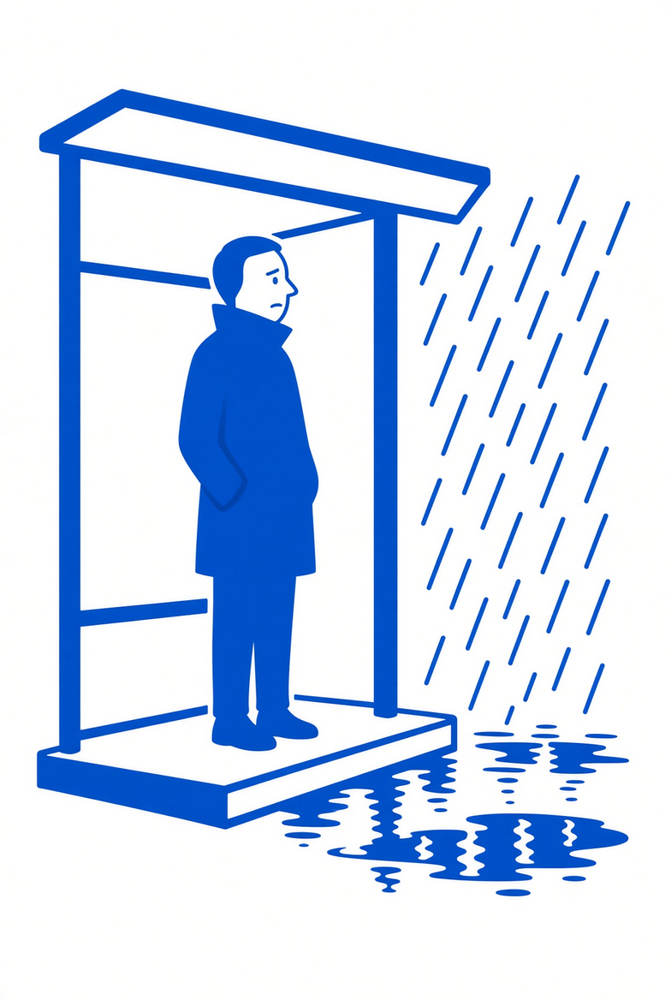
schuilen
to shelter
onregelmatigrang 5688Nature & weathergetekend
schuilde / schoolheeft geschuild / gescholen
- Scene
- one adult stands close under the roof of a bus shelter with the coat collar up, looking out at heavy rain that falls just beyond the edge of the roof; the ground in front is wet.
- Must read
- a person under a roof with rain falling just outside it.
- Avoid
- an umbrella held up while walking; a person hidden behind a wall (verbergen); a person running through rain (rennen); a body leaning aside from a ball (ontwijken).
- Alt text
- Iemand staat onder een afdakje met de kraag omhoog en kijkt naar de regen vlak voor zich.
- Example
- Wij schuilen voor de regen onder een boom.
We shelter from the rain under a tree.
schuilen.png · rang 5688 · B2 onregelmatig · lexicon woorden.tsv
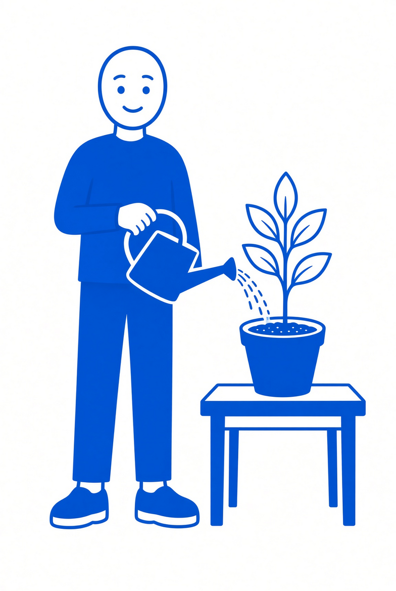
gieten
to pour
onregelmatigrang 5799Plants & farminggetekend
gootheeft gegoten
- Scene
- one adult stands beside a potted plant on a low table and tips a watering can over it, a thin stream of water falling from the long spout onto the soil; the plant stands upright and healthy. Nothing else is in the picture.
- Must read
- a stream of water falling from a watering can's spout onto a plant.
- Avoid
- a thin jet from a pistol nozzle (spuiten); two jugs poured into one bowl (mengen); a banknote falling into a chest (schenken); rain falling from the sky (regenen).
- Alt text
- Iemand houdt een kan met een tuit schuin boven een plant; er valt een straaltje water op de aarde.
- Example
- Zij giet melk in mijn glas.
She pours milk into my glass.
gieten.png · rang 5799 · B2 onregelmatig · lexicon woorden.tsv

knijpen
to pinch
onregelmatigrang 6468People & relationsgetekend
kneepheeft geknepen
- Scene
- one older adult leans down and pinches a child's cheek between thumb and forefinger, smiling; the child squints with one eye shut. Both stand side by side in a plain room; the child holds a small toy and nothing else is in the picture.
- Must read
- thumb and forefinger pinching a child's cheek.
- Avoid
- lips on a cheek (zoenen); a hand moving along a cat's back (strelen); half a lemon pressed onto a juicer (persen); a wet cloth twisted between two fists (wringen).
- Alt text
- Een oudere volwassene neemt de wang van een kind tussen duim en wijsvinger.
- Example
- Mijn oma knijpt mij in mijn wang.
My grandmother pinches me on my cheek.
knijpen.png · rang 6468 · B2 onregelmatig · lexicon woorden.tsv
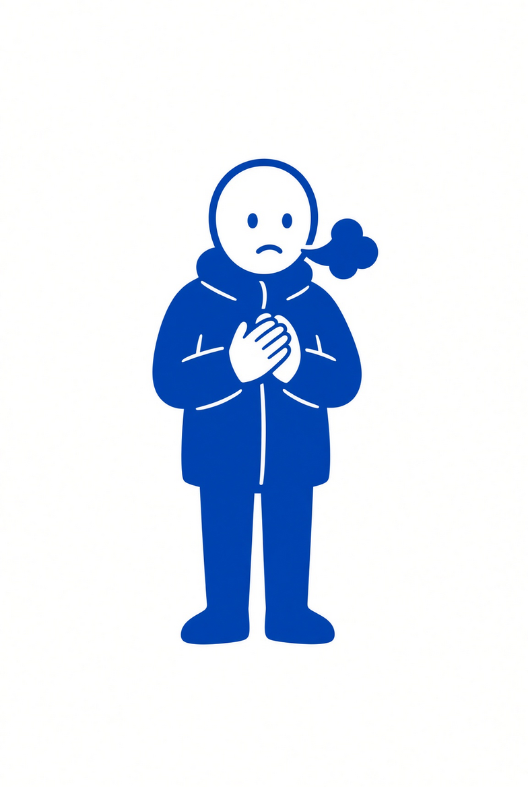
wrijven
to rub
onregelmatigrang 6657Body & healthgetekend
wreefheeft gewreven
- Scene
- one adult stands outside in a thick coat and rubs both palms hard against each other in front of the chest, shoulders hunched; a small cloud of breath hangs in front of the mouth.
- Must read
- two palms rubbed together in front of the chest.
- Avoid
- hands under a running tap (wassen); open hands held out to a small fire (warmen); hands clapping with a gap between them (klappen); hands folded together (bidden).
- Alt text
- Iemand in een dikke jas houdt de handpalmen tegen elkaar en beweegt ze heen en weer voor de borst.
- Example
- Ik wrijf in mijn ogen, want ik ben moe.
I rub my eyes because I am tired.
wrijven.png · rang 6657 · B2 onregelmatig · lexicon woorden.tsv

verjagen
to chase away
onregelmatigrang 7415Plants & farminggetekend
verjaagde / verjoegheeft verjaagd
- Scene
- one adult in a vegetable patch waves both arms and a cloth at three crows, which lift off the soil with wings spread and fly away from the person. The cloth flaps above the head and a low fence edges the patch. Three crows with wings spread, heads and beaks turned away from the person, flying outward and upward, clear of the soil.
- Must read
- birds flying off from a person waving both arms.
- Avoid
- a cat crouched before a mouse (jagen); seeds scattered on soil (zaaien); bread thrown to ducks (voeren); a hand raised to say goodbye.
- Alt text
- Iemand in een moestuin maakt grote gebaren met beide armen en een doek; drie kraaien vliegen op.
- Example
- De boer wil de vogels uit het veld verjagen.
The farmer wants to chase the birds out of the field.
verjagen.png · rang 7415 · B2 onregelmatig · lexicon woorden.tsv

stinken
to stink
onregelmatigrang 7589Body & healthgetekend
stonkheeft gestonken
- Scene
- one adult walks past an overflowing rubbish bin with the face turned sharply away, one hand holding the nose and the other waving in front of the face; three wavy lines rise from the bin.
- Must read
- wavy lines rising from a bin and a person turning away holding the nose.
- Avoid
- a person sniffing a flower (ruiken); paper dropped into a bin (verwijderen); a cough into the elbow (hoesten); a person sneezing into a tissue.
- Alt text
- Iemand loopt langs een volle afvalbak, draait het hoofd weg en houdt de neus dicht.
- Example
- De oude kaas stinkt in de koelkast.
The old cheese stinks in the fridge.
stinken.png · rang 7589 · B2 onregelmatig · lexicon woorden.tsv

sluipen
to sneak
onregelmatigrang 8408Movement & positiongetekend
sloopheeft/is geslopen
- Scene
- one adult tiptoes past a sleeping dog in a hallway, knees bent and shoulders raised, one finger on the lips and the eyes on the dog; one foot is lifted high on the toes.
- Must read
- a person on tiptoe past a sleeping dog.
- Avoid
- a cat crouched before a mouse (jagen); an ordinary walk (lopen); a person on hands and knees (kruipen); one eye at the gap of a door (gluren).
- Alt text
- Iemand loopt op de tenen langs een slapende hond, met een vinger tegen de lippen.
- Example
- De kat sluipt stil naar de vogel.
The cat sneaks quietly towards the bird.
sluipen.png · rang 8408 · B2 onregelmatig · lexicon woorden.tsv

behangen
to wallpaper
onregelmatigrang 8414House & homegetekend
behingheeft behangen
- Scene
- one adult on a low stepladder smooths a long strip of wallpaper onto a wall with a wide brush, the bottom of the strip still loose; a roll of paper and a paste bucket stand on the floor.
- Must read
- a strip of wallpaper smoothed onto a wall with a brush.
- Avoid
- a brush on a canvas (schilderen); a picture hung on a nail; a string of paper flags on a wall (versieren); a roller of paint on a wall.
- Alt text
- Iemand op een trapje strijkt een lange baan papier met een brede kwast tegen de muur.
- Example
- Wij gaan zaterdag de slaapkamer behangen.
We are going to wallpaper the bedroom on Saturday.
behangen.png · rang 8414 · B2 onregelmatig · lexicon woorden.tsv

wringen
to wring (out)
onregelmatigrang 8616House & homegetekend
wrongheeft gewrongen
- Scene
- one adult stands at a bucket and twists a wet cloth between two fists in opposite directions, water running out of the cloth into the bucket. A mop leans against the wall behind and nothing else is in the picture.
- Must read
- a wet cloth twisted between two fists with water pouring out.
- Avoid
- a cloth wiping a table (schoonmaken); a tea towel round a plate (drogen); a wet shirt on a line (nat); two palms rubbed together (wrijven).
- Alt text
- Iemand draait een natte doek met twee vuisten in elkaar; het water loopt in de emmer.
- Example
- Zij wringt de natte doek uit boven de gootsteen.
She wrings out the wet cloth above the sink.
wringen.png · rang 8616 · B2 onregelmatig · lexicon woorden.tsv

rijgen
to thread (beads)
onregelmatigrang 9014Arts & mediagetekend
reegheeft geregen
- Scene
- one child sits at a table and pushes a needle with a long thread through a bead, a row of beads already on the thread; a small dish of loose beads stands beside.
- Must read
- a bead slid onto a thread.
- Avoid
- a bandage wound round an arm (verbinden); a rope knotted round firewood (binden); a pencil on paper (tekenen); a needle through cloth.
- Alt text
- Een kind schuift kraaltjes aan een draad; er staat een bakje met losse kraaltjes naast.
- Example
- Het meisje rijgt kralen aan een draad.
The girl threads beads on a string.
rijgen.png · rang 9014 · B2 onregelmatig · lexicon woorden.tsv
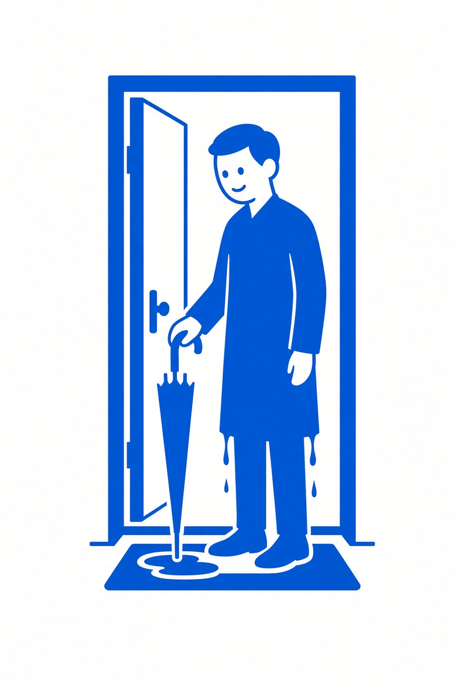
druipen
to drip
onregelmatigrang 9044House & homegetekend
droopheeft/is gedropen
- Scene
- one adult has just stepped indoors and stands on the doormat in a soaked coat, holding a closed umbrella point down; water runs off the coat hem and the umbrella tip in thin trickles and gathers in a small pool on the mat. The front door stands open behind.
- Must read
- water running off a soaked coat and a closed umbrella onto the mat.
- Avoid
- a drop falling from a turned-off tap (lekken); rain strokes filling the sky outdoors (regenen); a person dry under a roof beside the rain (schuilen); a wet cloth twisted between two fists (wringen).
- Alt text
- Iemand staat net binnen op de deurmat; van de natte jas en de dichte paraplu loopt water op de mat.
- Example
- De regen druipt van het dak.
The rain drips from the roof.
druipen.png · rang 9044 · B2 onregelmatig · lexicon woorden.tsv